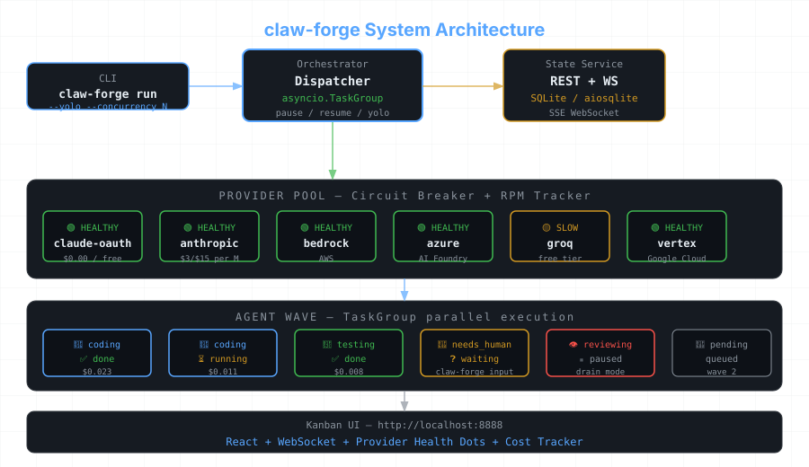

The autonomous coding agent harness that doesn't quit.
Multi-provider API rotation. Pure Python. Zero Node.js.
Why claw-forge
Built for teams that outgrow a single API key and need real production reliability.
Never hit rate limits again. Anthropic, Bedrock, Azure AI Foundry, Vertex AI, Groq — auto-fallback with circuit breaker and RPM tracking per provider.
6 LSP servers (Python, Go, Rust, TS, Solidity, C++) + systematic debugging + verification gate + parallel dispatch — ready out of the box, no config required.
No subprocess+threading mess. TaskGroup + Semaphore. Clean, fast, and debuggable. Waves of parallel tasks with dependency ordering.
Add new agent types via pyproject.toml entry points. Third-party plugins just work — no patching the core, no forks.
Real-time board with WebSocket updates. Provider health dots. Cost tracker. Needs-Human column for stuck agents. No build step — just open your browser.
Use your claude login credentials. Zero API key juggling for the primary provider. Add keys for extra redundancy, not as a requirement.
Architecture
The dispatcher routes tasks through the provider pool, agents run in parallel waves, and everything streams live to the Kanban UI.

Install with uv for instant, isolated installation. No virtualenv ceremony.
pip install uv
uv tool install claw-forge
claw-forge init my-project
claw-forge run my-project
# YOLO mode: max speed
claw-forge run my-project --yolo